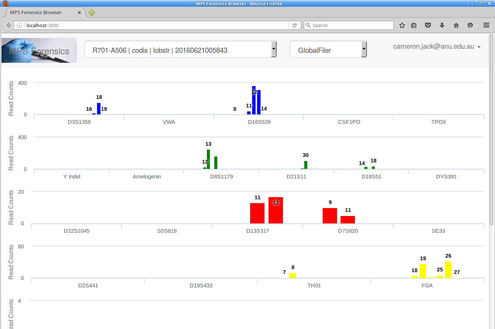
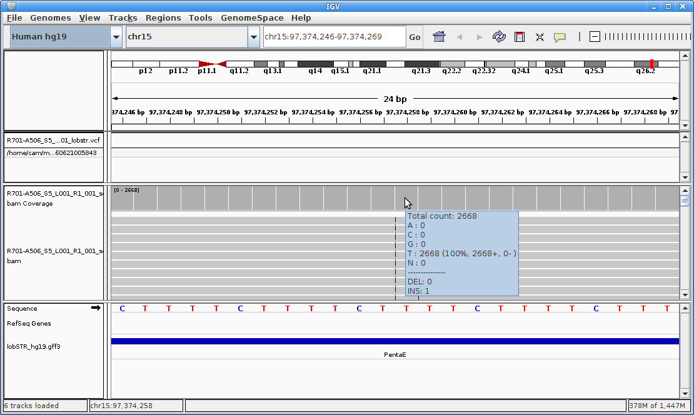

Once logged in to the SNP/STR Viewer, if you have completed STR pipeline runs with LobSTR or STRait Razor, you can view the results by clicking on the box directly to the right of the MPS Forensics graphic and choosing your data set from the drop down. To make the data show, you will likely need to change the panel to one of the Y-chromosome panels, such as Y-Filer Plus, and then back again if you wish to one of the global panel options.
Hovering the mouse over any allele bar will show a range of details of the STR, the read coverage and the thresholds for the locus. Clicking on the allele number will open the locus and all reads from the BAM file in IGV. IGV will likely pop up a message asking for permission to clear old results - answer yes to this to display the selected locus.
 Return to help page